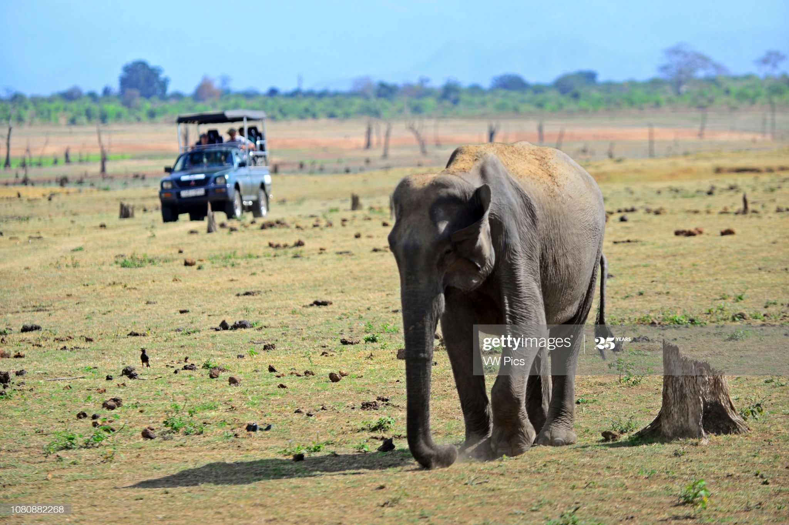

The African elephant (Loxodonta) is a genus comprising two living elephant species, the African bush elephant (L. africana) and the smaller African forest elephant (L. cyclotis).
Both are herbivores and live in groups. They have grey skin and differ in the size of their ears and tusks, and in the shape and size of their skulls.Both species are listed as Vulnerable species on the IUCN Red List since 2004, and are threatened by habitat loss and fragmentation.Poaching for the illegal ivory trade is a threat in several range countries as well.
Loxodonta is one of two existing genera of the family Elephantidae.The name refers to the lozenge-shaped enamel of their molar teeth. Fossil remains of Loxodonta species have been excavated in Africa, dating to the middle Pliocene.
